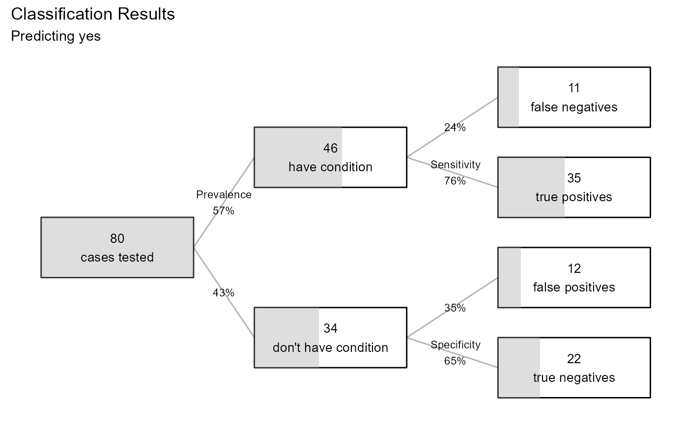

performance.glm.RdModel Performance for Logistic Regression
# S3 method for glm
performance(x, data, digits = 4, p = 0.5, plot = FALSE, ...)an object of class "glm".
a data frame. If no dataset is provided, the model training data is used.
integer; number of digits to print (default=4).
numeric; probability cutoff for classifying cases (default = 0.5)
logical; If TRUE the results are plotted.
not currently used
The results of the methods performance.glm
Produce indices of model performance for logistic regression
# performance on training sample
fit <- glm(am ~ hp + wt, family=binomial, data = mtcars)
performance(fit, plot=TRUE)
#> LOGISTIC REGRESSION PERFORMANCE
#> Data : mtcars
#> N : 32
#> Response variable : am
#> Category Balance : 0 (0.59%) 1 (0.41%)
#> Predicted category: 1
#> Prob to classify : >=0.5
#>
#> Model: glm(am ~ hp + wt,
#> family = binomial, data = mtcars)
#>
#> Confusion Matrix
#>
#> Actual
#> Predicted 0 1
#> 0 18 1
#> 1 1 12
#>
#> Overall Statistics
#>
#> Accuracy: 0.9375
#> 97% CI : (0.7919, 0.9923)
#> No Information Rate: 0.5938
#> P-Value [Acc > NIR]: 1.452e-05
#>
#> Statistics by Category
#>
#> Sensitivity 0.9231
#> Specificity 0.9474
#> Pos Pred Value 0.9231
#> Neg Pred Value 0.9474
#> F1 0.9231
#> ---
#> Note: recall = sensitivity,
#> precision = pos pred value.
